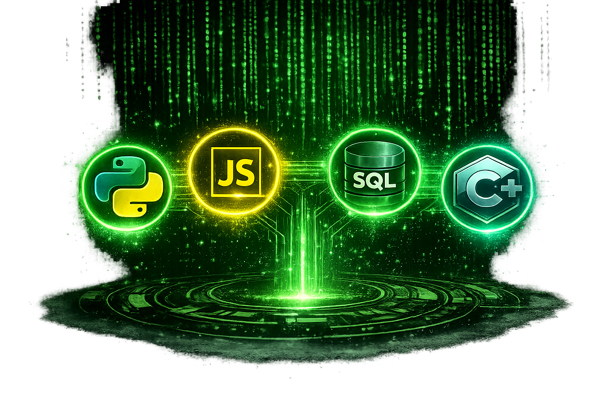

Python

Python is a high-level programming language known for its simple syntax and readability. It is widely used for web development, automation, artificial intelligence, and data science.

Python is a high-level programming language known for its simple syntax and readability. It is widely used for web development, automation, artificial intelligence, and data science.

JavaScript is the primary programming language of the web. It allows developers to create interactive websites and is also used for server-side development with Node.js.

SQL (Structured Query Language) is used to create, manage, and retrieve data from relational databases. It is an essential language for working with large amounts of stored information.

C++ is a high-performance programming language commonly used for system software, game development, and embedded systems. It provides programmers with direct control over memory and hardware resources.